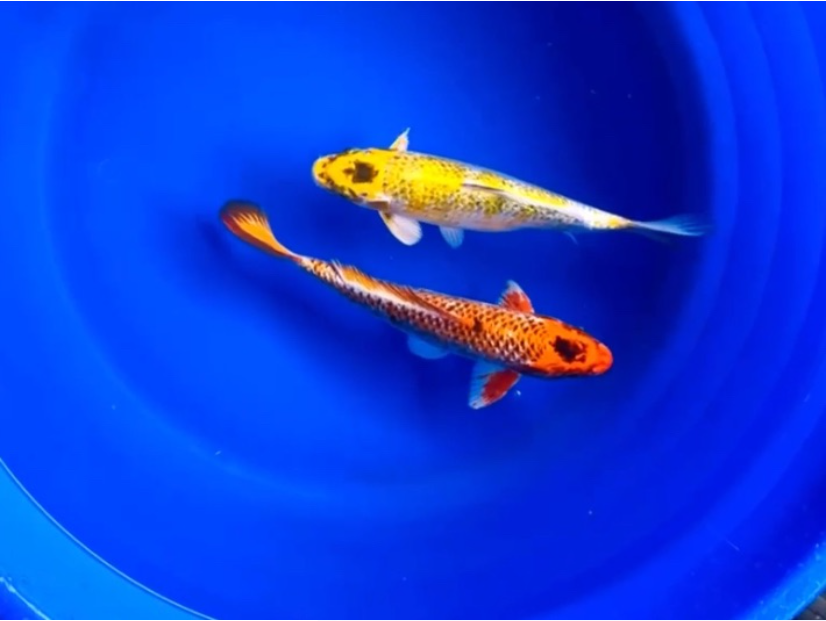
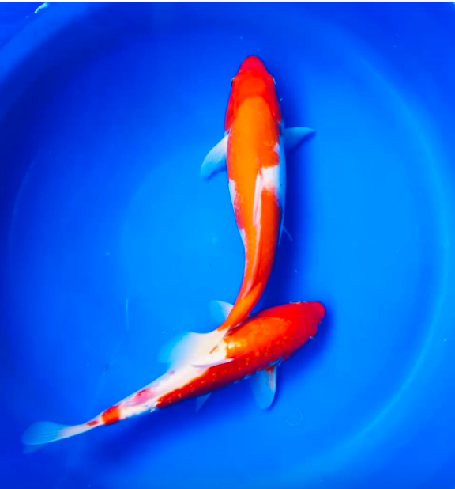
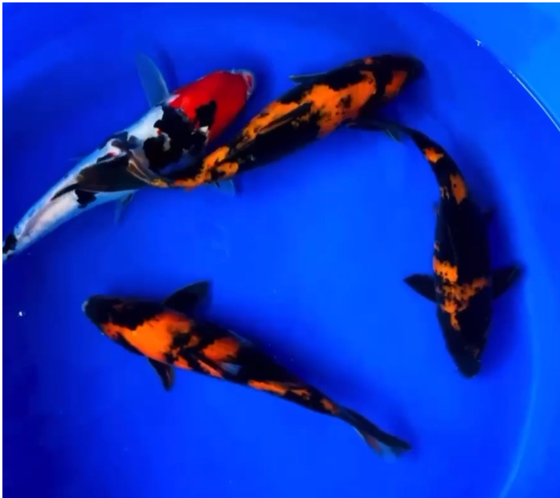
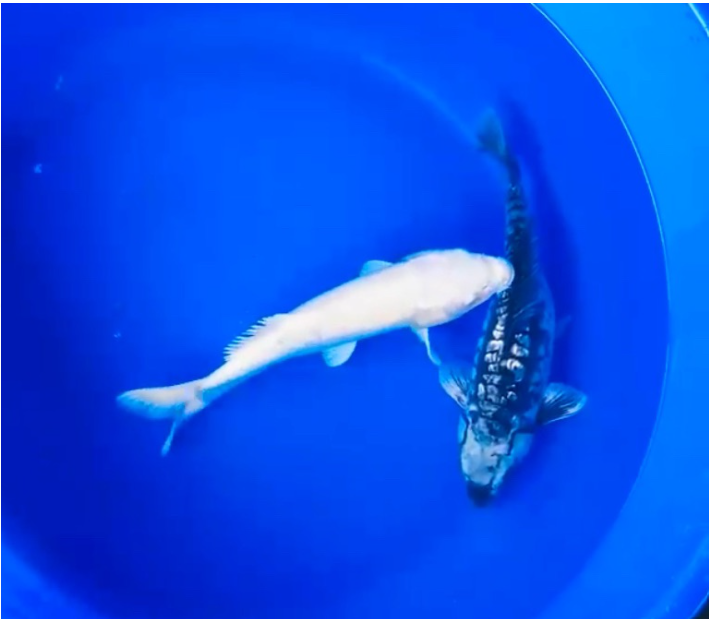
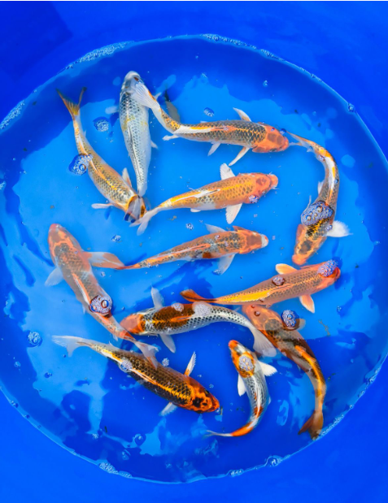
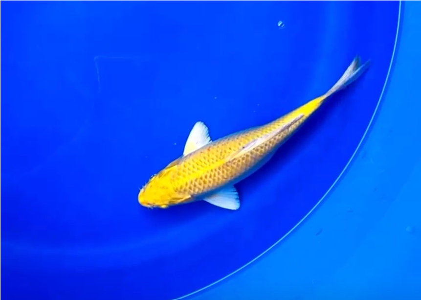
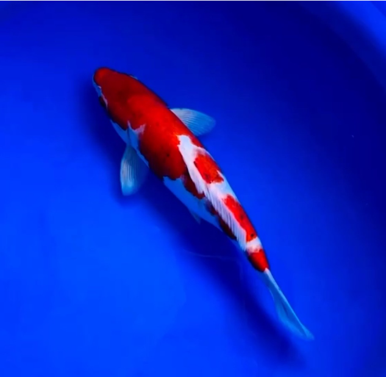
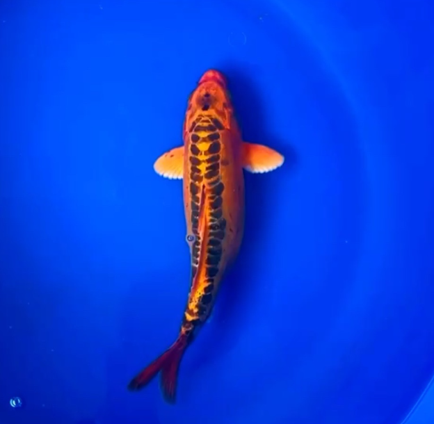
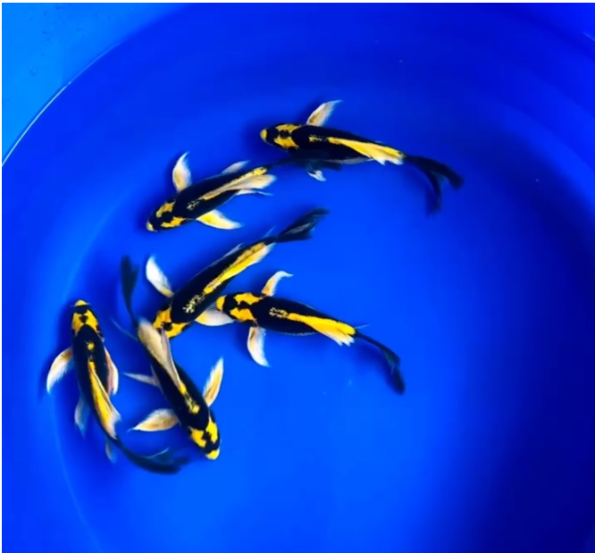

The Milky White Koi Carp is a stunning, pure white koi with a glossy sheen and smooth, symmetrical fins. It grows up to 24-36 inches (60-90 cm) and can weigh up to 20 pounds (9 kg), with a lifespan of 20-30 years (or 40+ with excellent care). It thrives in water temperatures of 15-25°C, pH levels of 7.0-8.0, and requires a spacious, well-oxygenated pond at least 3 feet deep. Feed it a balanced diet of high-quality pellets, vegetables, and occasional protein treats for optimal growth and health.

Matsubha 7"
Price: Rs. 800
The Matsubha is a stunning koi variety that boasts a pure white color and a glossy sheen. Its fins are smooth and symmetrical, adding to its beauty. This impressive fish can grow up to 24-36 inches in length and weigh up to 20 pounds. With proper care, the Matsubha can live for 20-30 years or even 40+ years. To thrive, the Matsubha requires water temperatures between 15-25°C and pH levels of 7.0-8.0. It needs a spacious, well-oxygenated pond with a minimum depth of 3 feet. A balanced diet of high-quality pellets, vegetables, and occasional protein treats is essential for the Matsubha's optimal growth and health.

Hariwake 10"
Price: Rs. 1600
The Hariwake is a stunning koi variety with a pure white coloration and glossy sheen. Its smooth, symmetrical fins add to its beauty. This koi grows up to 24-36 inches (60-90 cm) in length and can weigh up to 20 pounds (9 kg). With proper care, it can live for 20-30 years, or even 40+ years in ideal conditions. To thrive, the Hariwake requires water temperatures between 15-25°C and pH levels of 7.0-8.0. It needs a spacious, well-oxygenated pond with a minimum depth of 3 feet. A balanced diet of high-quality pellets, vegetables, and occasional protein treats is essential for its optimal growth and health.

Utusuri and Sanke 10"
Price: Rs. 1,800
Description: The Utusuri and Sanke Koi are highly desirable for their intricate patterns and vibrant colors. Known for their beauty and grace, these koi make stunning additions to any pond or aquarium. They thrive in well-maintained water conditions and enjoy a diet rich in high-quality koi pellets.
pH: Ideal pH range is 6.5 to 7.5. Size: Can grow over 12 inches (30 cm) at maturity. Lifespan: Can live up to 20 years or more with proper care.

White Ogon and Ghost Koi 10"
Price: Rs. 2,200
Description: The White Ogon and Ghost Koi are distinguished by their stunning white bodies and unique markings. They are calm and peaceful fish that are best kept in larger ponds. These koi bring elegance and serenity to any aquatic environment.
pH: Ideal pH range is 6.5 to 7.5. Size: Can grow to about 12 inches (30 cm) when fully grown. Lifespan: Typically lives 15 to 20 years with appropriate care.

Metallic Koi 7-8"
Price: Rs. 1,200
Description: The Metallic Koi are admired for their beautiful shimmering scales and vivid colors. They are hardy fish that thrive in a variety of conditions and are well-suited for both koi ponds and aquariums. These koi love to explore their environment and are often quite social.
pH: Ideal pH range is 6.5 to 7.5. Size: Generally grow to about 12-14 inches (30-35 cm) at full maturity. Lifespan: Can live up to 20 years or longer with proper care.

Yellow Ogon 8-10"
Price: Rs. 1,600
Description: The Yellow Ogon Koi is cherished for its stunning yellow coloration, which brightens any pond or aquarium. These fish are relatively easy to care for and adapt well to a variety of water conditions. They thrive in a well-maintained environment with plenty of space to swim.
pH: Ideal pH range is 6.5 to 7.5. Size: Can reach lengths of 12-14 inches (30-35 cm) at maturity. Lifespan: Generally lives for 15-20 years with proper care.
Metallic Koi 8"
Price: Rs. 1,500
Description: The 8-inch Metallic Koi are known for their vibrant colors and metallic sheen. They are easy to manage and thrive in various aquatic environments. These koi are perfect for both beginners and experienced hobbyists.
pH: Ideal pH range is 6.5 to 7.5. Size: Typically grow to about 12-14 inches (30-35 cm) at maturity. Lifespan: Can live up to 20 years with proper care.

Goromo Koi 10-12"
Price: Rs. 2,000
Description: The Goromo Koi is a stunning variety known for its striking colors and patterns. These fish are graceful swimmers and make a wonderful addition to any pond community. They require a well-maintained environment with stable water conditions.
pH: Ideal pH range is 6.5 to 7.5. Size: Typically grows to about 12-14 inches (30-35 cm) when fully mature. Lifespan: Generally lives for 15-20 years with good care.

Orange Sushi 8-10"
Price: Rs. 1,800
Description: The Orange Sushi Koi is celebrated for its vibrant orange hue and unique coloration. These koi are peaceful and social, often seen swimming together in groups. They thrive in clean, well-oxygenated water.
pH: Ideal pH range is 6.5 to 7.5. Size: Typically grows to about 12 inches (30 cm) when fully matured. Lifespan: Can live for 15-20 years in a well-maintained environment.

Kobuto Veiltail Koi 8-10"
Price: Rs. 1,500
Description: The Kobuto Veiltail Koi is known for its elegant flowing fins and vibrant colors. They are gentle swimmers and typically do well in a community setting. Well-suited for larger ponds and aquariums, these fish thrive in stable water conditions.
pH: Ideal pH range is 6.5 to 7.5. Size: Generally reaches lengths of 10-12 inches (25-30 cm) as adults. Lifespan: Lives for approximately 15 to 20 years with proper care.